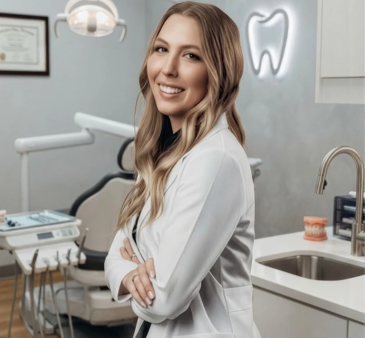
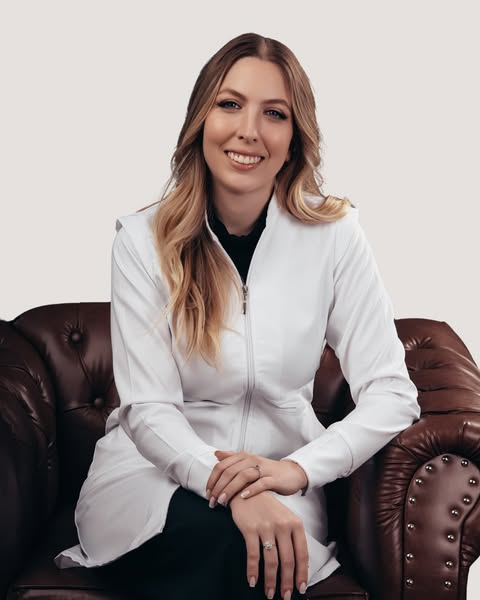

01
Limpeza
Higienização e cuidado preventivo para manter dentes e gengivas saudáveis.
↗Odontologia próxima, precisa e natural — com tratamentos para cuidar da saúde, recuperar a função e valorizar o seu sorriso.

Antes de indicar um tratamento, entender você.
Antes de transformar um sorriso, cuidar da saúde.

Cada pessoa chega ao consultório com uma história, uma necessidade e um jeito próprio de sorrir. O atendimento parte dessa escuta.
A proposta é tornar a experiência odontológica mais clara e tranquila, com avaliação individualizada, comunicação transparente e atenção aos detalhes em cada etapa do tratamento.
Do cuidado preventivo à reabilitação do sorriso, os tratamentos são definidos a partir da avaliação e da necessidade de cada paciente.
Higienização e cuidado preventivo para manter dentes e gengivas saudáveis.
↗Recuperação de dentes comprometidos, buscando função e aspecto natural.
↗Procedimentos planejados com orientação clara e atenção ao conforto.
↗Reabilitação para recuperar conforto, função mastigatória e segurança ao sorrir.
↗Procedimentos para iluminar o sorriso de forma planejada e personalizada.
↗Planejamento da reposição de dentes para recuperar função e estabilidade.
↗Tratamento do interior do dente para preservar a estrutura sempre que possível.
↗Refinamento estético do sorriso com atenção à proporção, forma e naturalidade.
↗Um bom tratamento começa muito antes do procedimento: começa quando você se sente ouvido.
Entender suas dúvidas, expectativas e prioridades antes de indicar qualquer caminho.
Decisões baseadas em avaliação cuidadosa e em um plano individualizado.
Resultados que respeitam proporção, características individuais e o seu jeito de sorrir.
Comunicação clara para que você entenda o que está sendo feito e por quê.
Cuidar do sorriso é também
cuidar de como você se sente.
Entre em contato para tirar suas dúvidas e verificar a disponibilidade de horários.
O primeiro encontro é dedicado à conversa, avaliação e entendimento das suas necessidades. A partir disso, são apresentadas as possibilidades de cuidado e os próximos passos.
Não. Você pode chegar com uma dúvida, uma queixa ou apenas a vontade de cuidar melhor do seu sorriso. A avaliação ajuda a definir o caminho adequado.
Entre em contato pelo WhatsApp. A equipe orientará você sobre horários e disponibilidade.
Sim. A clínica informa atendimento adulto e infantil.